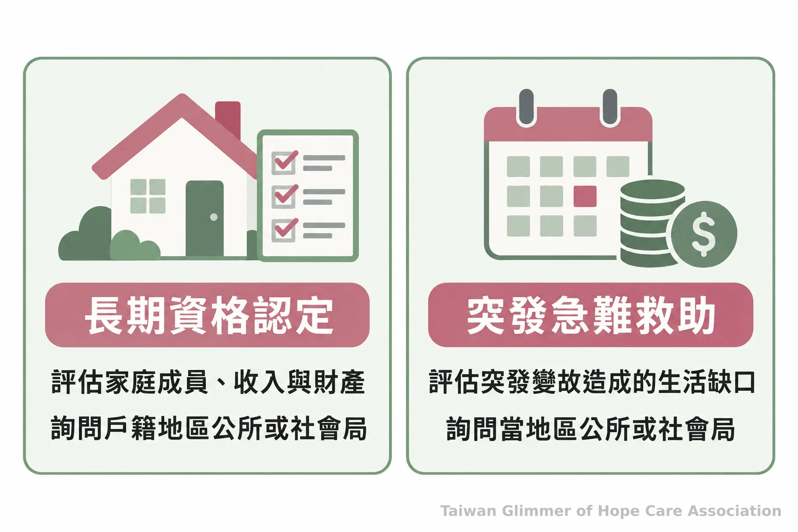
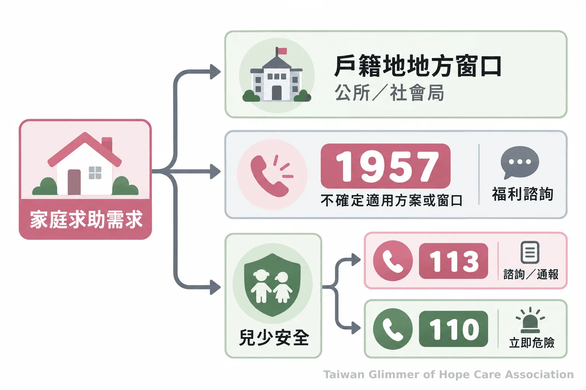

家庭突然少了收入，孩子能申請哪些扶助？先分清長期資格與急難資源
收入中斷時，可向戶籍地公所或社會局詢問低收入戶、急難救助與兒少扶助；1957提供福利諮詢，113與110處理兒少安全需求。
家中突然少了一份收入，房租、餐費和孩子的生活開銷接著到期，照顧者常得同時回答兩個問題：眼前的缺口怎麼補，接下來的生活如何安排？弱勢家庭補助有不同入口，低收入戶或中低收入戶是資格認定，急難救助處理突發困境，兒少扶助則依孩子與家庭狀況評估。先說明收入何時改變、現在最急迫的支出，再請戶籍所在地公所或社會局協助判斷。提出詢問不代表符合資格，最後仍由主管機關審核。
一、先分辨眼前急難與長期扶助
基本生活已出現急迫缺口，可先問急難救助；若收入或家庭條件長期符合規定，再詢問低收入戶或中低收入戶認定。 家中有兒少，也可請窗口一併檢視兒少扶助。
急難救助處理突發缺口，低收入戶認定看家庭條件，兒少扶助及發展帳戶另有適用對象。申請方式與文件請向地方主管機關確認。
- 眼前生活費有缺口，先說明突發變故並詢問急難資源。
- 家庭收入條件有變，詢問低收入戶或中低收入戶認定。
- 家中有孩子，請承辦窗口一併確認兒少生活扶助與發展帳戶。
二、低收入戶與中低收入戶看家庭條件
可向戶籍所在地的鄉鎮市區公所或縣市政府社會局（處）詢問申請方式。 審核依現行規定辦理，家庭人口、收入與財產等條件及地方標準都可能影響認定。
資格依規定審查，家庭人口、收入和財產都可能影響結果。衛福部的低收入戶及中低收入戶說明列有法規與諮詢管道。詢問前先整理家庭成員、收入變動及必要支出，再向承辦人確認文件與程序；資料尚未備齊也可先致電。
各地標準可能不同，資格以戶籍地當年度公告及個別審查為準。

三、主要生計者遇到變故，詢問急難救助
若主要生計者因失業、重傷病、死亡、失蹤或其他原因無法工作，家庭因此陷入困境，可儘快聯絡公所或社會局詢問急難紓困與地方急難救助。 是否適用由主管機關依規定評估。
衛福部列有中央急難紓困、地方政府急難救助及中央急難救助。若家庭經協助後仍陷困境，可再詢問其他方案。向窗口說明變故時間、收入影響與最急迫開銷，有助確認受理單位。衛福部的急難救助資訊列有地方窗口及1957福利諮詢專線。
四、家有兒少，可詢問生活扶助與發展帳戶
可向戶籍所在地公所或社會局詢問弱勢兒童及少年生活扶助、緊急生活扶助，以及兒童及少年未來教育與發展帳戶。 各方案的對象與程序不同，需逐項確認。
衛福部的兒少福利資訊列有弱勢兒少生活扶助及緊急生活扶助，適用情況由地方主管機關評估。兒少教育發展帳戶則協助符合條件者累積資產，用於成年後就學、就業、職業訓練或創業，適用對象與用途見衛福部公布的條例。資格及辦理方式請向地方窗口確認。
「為提升兒童及少年平等接受良好教育與生涯發展之機會，建立兒童及少年未來教育與發展帳戶制度，協助資產累積、教育投資及就業創業，以促進其自立發展。」《兒童及少年未來教育與發展帳戶條例》第一條
五、微光在地陪伴，讓孩子有持續創作的空間
微光與在地單位合作開設藝術陪伴課，每個據點每月一堂，透過創作與分享陪孩子認識情緒。 這是陪伴活動，補助資格與申請仍由政府主管機關受理。
微光與瑞芳愛鄰、板橋明穗教會及中壢宣愛合作設點。課程從藝術家作品帶出情緒主題，不比畫得好不好，也沒有標準答案，例如以「心情的顏色」創作，或跟著夏卡爾畫夢想花園。藝術陪伴不等於藝術治療，畫作也不能用來判定孩子是否受虐。
瑞芳是微光第一個兒童繪畫班的起點，中壢是桃園第一個據點。課程紀錄可見〈桃園第一個據點開課：中壢宣愛「心情的顏色」〉與〈瑞芳愛鄰據點：跟著夏卡爾，飛進我的夢想花園〉。生活支出有困難，仍需直接向社福窗口詢問補助資源。
六、求助資訊與今天能做的一步
先聯絡戶籍所在地公所或社會局；不確定方案或窗口時，可撥1957福利諮詢專線。 若同時有兒少安全疑慮，另撥113諮詢或通報；遇到立即危險則撥110。
通話前記下所在縣市、收入變動、家中是否有兒少及最急迫支出，再確認受理單位、文件與期限。1957提供福利諮詢；兒少安全疑慮可撥113，立即危險先撥110。
親友或社區志工可先取得家庭同意，再陪同致電或提供窗口資訊。轉介時保護孩子的姓名、學校、照片及家庭細節；是否申請由家庭決定。

常見問題
可以先向戶籍地公所或社會局說明變故與生活需要，詢問急難救助等資源。 是否符合條件由主管機關審核。
常見問題
Q1：第一次詢問要準備哪些資料？
先整理家庭成員、收入變化時間與急迫支出，再向受理單位確認正式文件清單。尚未備齊文件，也可以先詢問窗口與程序。
Q2：孩子的生活扶助和教育發展帳戶是同一種補助嗎？
兩者不同。生活扶助依兒少與家庭狀況評估；發展帳戶有法定對象與特定用途，需分別向地方主管機關確認。
Q3：不確定該找哪個社會福利單位怎麼辦？
可先撥1957福利諮詢專線，說明所在地與目前最急迫的需要，再依指引聯絡受理單位。
Q4：戶籍和居住地不同縣市，應到哪裡詢問？
先聯絡戶籍所在地公所或社會局，說明目前居住地，再確認受理窗口及是否能跨區辦理。
Q5：發現孩子可能有安全疑慮，該打哪支電話？
可撥113保護專線諮詢或通報；若有立即危險，先撥110。衛福部113保護專線介紹列有服務內容與聯絡方式。
脆弱家庭與社會安全網｜系列四之 4
參考文獻
- 衛生福利部（2026，查閱）。低收入戶及中低收入戶。衛生福利部。https://www.mohw.gov.tw/cp-88-79005-1.html
- 衛生福利部（2026，查閱）。急難救助。衛生福利部。https://www.mohw.gov.tw/cp-190-226-1.html
- 衛生福利部（2026，查閱）。兒少福利。衛生福利部。https://www.mohw.gov.tw/cp-88-223-1.html
- 衛生福利部社會救助及社工司（2018）。兒童及少年未來教育與發展帳戶條例。衛生福利部。https://dep.mohw.gov.tw/DOSAASW/cp-3841-41561-103.html
- 衛生福利部保護服務司（2024）。113保護專線介紹。衛生福利部。https://dep.mohw.gov.tw/DOPs/cp-1183-6499-105.html
本文同步刊於 appi.news。